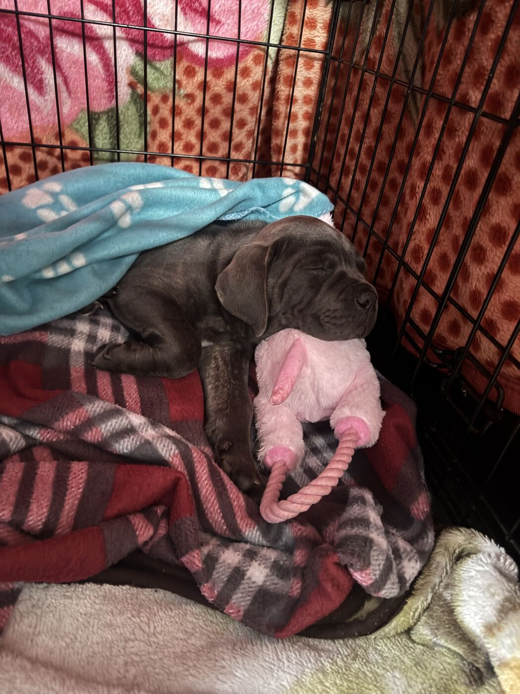
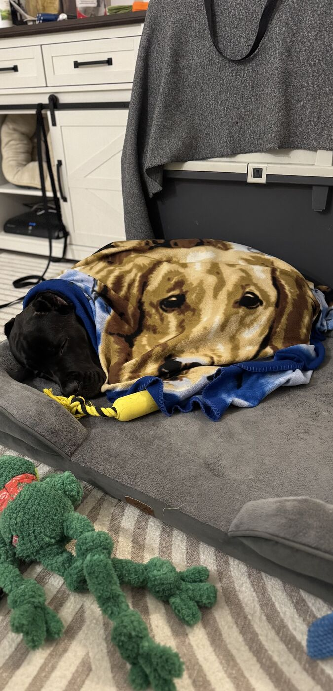
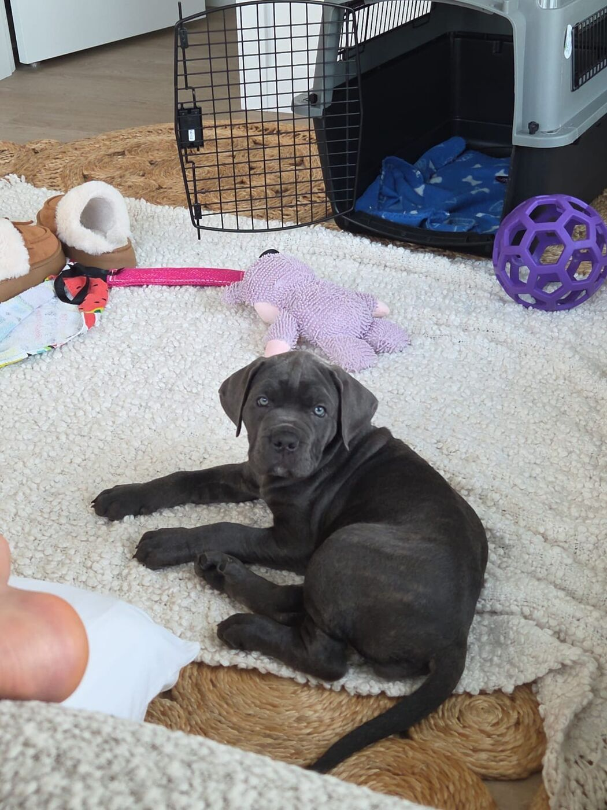
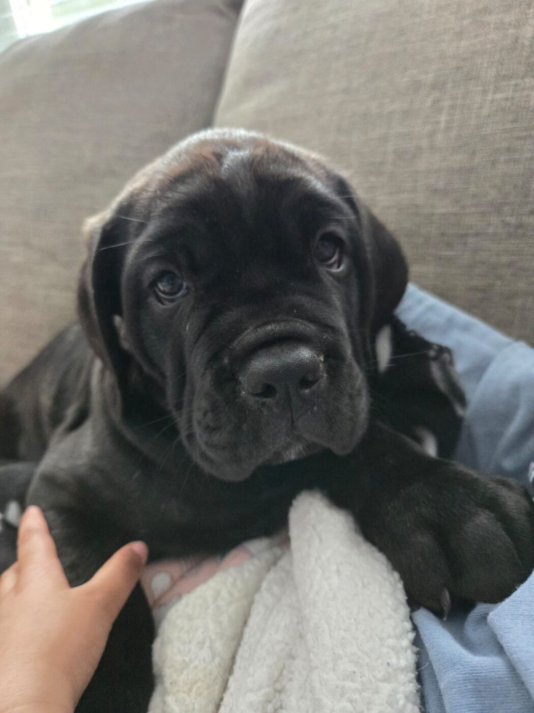

A Hands-On, Small-Scale Program
Medieval Cane Corso is based in Surrey, British Columbia. The program is intentionally kept small and is centered around a carefully selected foundation pairing rather than volume. This allows every dog and every puppy family to receive genuine care, attention, and support.
Get In Touch
Built on Intention, Not Volume
We are a small, purpose-driven breeding program built on intention—not volume.
Our program is centered around a carefully selected foundation pairing, chosen for complementary structure, sound temperament, and overall balance. From this foundation, we focus on producing consistent, well-developed Cane Corso while continuing to evaluate and refine our program over time.
Each dog is raised in a structured, hands-on environment designed to develop confidence, stability, and real-world adaptability from the very beginning. Early socialization is a priority, ensuring our dogs can integrate into family life while preserving the natural instincts and defining characteristics of the breed.
Our goal is simple: to produce healthy, stable Cane Corsos that are calm, confident, and deeply loyal—dogs that can live as reliable companions while maintaining their natural protective instincts.
How Our Puppies Are Raised
From birth through placement, our puppies are raised hands-on in a home environment — never in a kennel or outbuilding. Early handling, gentle exposure to everyday household sounds and surfaces, and consistent interaction with their dedicated caretakers are part of daily life from the very beginning.




Health, Structure & Temperament Come First
In our program, health, sound structure, and stable temperament are treated as foundational priorities. Our stud, Sir Shadow, has completed OFA health testing for hips, elbows, and cardiac, contributing to the foundation we are building within our program.
As we continue to develop, we are actively working toward expanding health testing across our dogs and future generations. Each pairing is carefully considered with the goal of improving overall soundness, consistency, and long-term health.
Early results are in line with our goals, with dogs showing balanced structure, efficient movement, and stable, confident temperaments. We remain committed to ongoing evaluation, thoughtful decision-making, and transparent, responsible breeding practices as our program evolves.
View Health Certifications
Understanding the Cane Corso
Responsible ownership begins with a proper understanding of the Cane Corso.
Breed Overview & Temperament
The modern Cane Corso is a relatively young, carefully reconstructed Italian breed — not an unbroken "ancient Roman war dog." In the 1970s and 1980s, dedicated Italian enthusiasts, including Dr. Paolo Breber, went farm to farm across southern Italy looking for dogs that still showed the traditional type and temperament. Historically, these dogs worked as multipurpose farm and property guardians. Today's Cane Corso keeps that heritage — powerful, athletic, highly observant, and naturally protective.
Today's Cane Corso is a powerful, highly intelligent guardian that bonds deeply with its family and is naturally reserved with strangers. They require firm, fair leadership, early and ongoing socialization, and consistent training to stay stable, confident, and under control.
Is the Cane Corso Right for You?
The ideal Cane Corso home is experienced with large, working breeds and committed to providing structure, training, and consistency. These dogs require time, stability, and clear boundaries to develop into balanced, reliable companions.
This is not a breed suited for those looking for an "easy" dog, frequent off-leash freedom in uncontrolled environments, or a guardian without daily involvement. A well-bred Cane Corso can be an exceptional companion—but only in the right environment, with the right expectations and level of commitment.
Located in Surrey, British Columbia
Medieval Cane Corso is based in Surrey, BC, and welcomes inquiries from suitable families throughout Canada, the United States, and internationally. International delivery is available, with puppies personally accompanied by a dedicated flight nanny to help ensure a safe and comfortable journey to their new families.
Ready to Learn More?
Meet the dogs behind our program, or reach out with your questions.